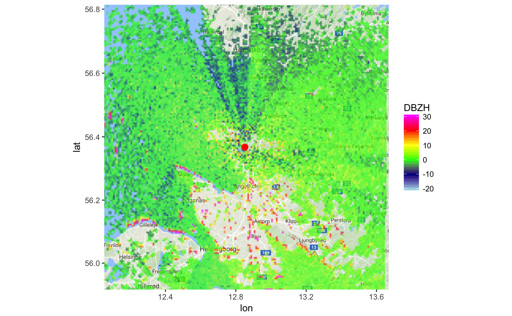

Download a basemap for map(ppi)
Downloads a Google Maps, OpenStreetMap, Stamen Maps or Naver Map base layer map using get_map.
download_basemap(x, verbose = TRUE, zoom, alpha = 1, ...)
Arguments
| x | An object of class |
|---|---|
| verbose | Logical, whether to print information to console. |
| zoom | Zoom level (optional), see get_map. An integer from 3 (continent) to 21 (building). By default the zoom level matching the ppi extent is selected automatically. |
| alpha | Transparency of the basemap (0-1). |
| ... | Arguments to pass to get_map function. |
Examples
# load an example scan: data(example_scan) # print summary info for the scan: example_scan#> Polar scan (class scan) #> #> parameters: VRADH DBZH ZDR RHOHV PHIDP #> elevation angle: 0.5 deg #> dims: 480 bins x 360 rays# make ppi for the scan ppi <- project_as_ppi(example_scan) # grab a basemap that matches the extent of the ppi: basemap <- download_basemap(ppi)#> Downloading zoom = 9 ...#># map the reflectivity quantity of the ppi onto the basemap: map(ppi, map = basemap, param = "DBZH")#> Warning: Removed 1 rows containing missing values (geom_rect).# download a different type of basemap, e.g. satellite imagery: # see get_map() in ggmap library for full documentation of options basemap = download_basemap(ppi, maptype = "satellite")#> Downloading zoom = 9 ...#>#> Warning: Removed 1 rows containing missing values (geom_rect).